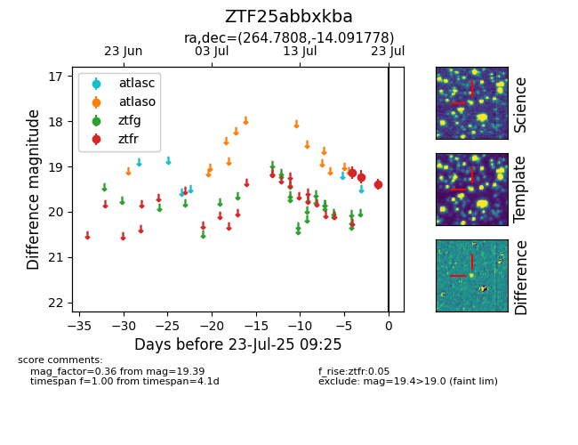

Target ZTF25abbxkba at 2025-07-23 11:48, see:
FINK: fink-portal.org/ZTF25abbxkba
Lasair: lasair-ztf.lsst.ac.uk/objects/ZTF25abbxkba
ALeRCE: alerce.online/object/ZTF25abbxkba
alt names
ZTF25abbxkba (ztf,fink)
coordinates:
equatorial (ra, dec) = (264.7808,-14.09178)
galactic (l, b) = (11.9318,+9.02422)
photometry
last ztfr=19.39
3 ztfr detections
